Подключение к базе данных MS Access из ArcGIS 9.x
Загрузка данных из MS Access в ArcGIS
Статья написана на примере тех же данных, что и аналогичная для ArcView 3.x. Технология используется при создании карт распространения растений сайта «Флора Таймыра» © И.Поспелов, Е.Поспелова 2007-2008.
Сразу необходимо сделать важное замечание. В отличие от ArcView 3.x, ODBC driver ArcGIS 9.x значительно более требователен к именам объектов баз данных. Поэтому крайне нежелательны имена таблиц и полей в них на кириллице, а также с нестандартными символами типа &, @, и т.д., и с пробелами.
Итак, имеем созданный в ArcGIS 9.2 проект, задача – связать shape-файл локальных флор (белые кружки), с атрибутивными данными, хранящимися в базе данных (БД) MS ACCESS 2007. Нажимаем «Add Theme»
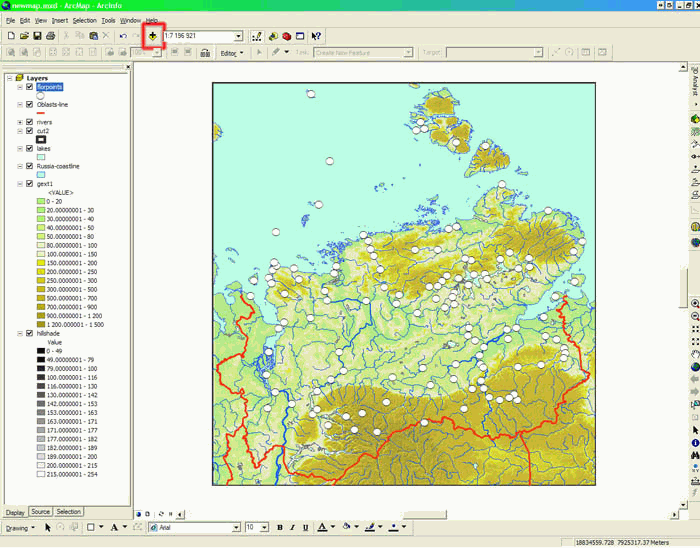
В списке Look In выбираем Database Connections:
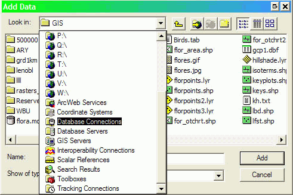
В следующем окошке выбираем Add OLE DB Connection:
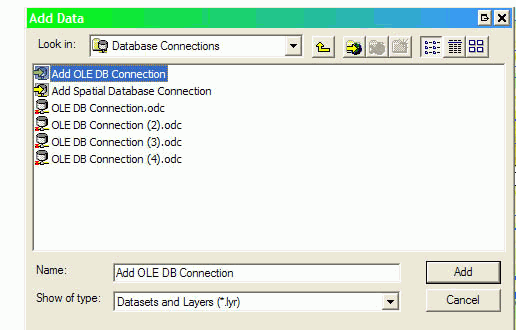
Соединение с БД, которое будет установлено, сохранится в памяти ArcGIS и будет предлагаться теперь для любого нового проекта, что видно по уже имеющимся на иллюстрации OLE DB Connection(№№).
Примечание. Можно подключиться и напрямую к файлу БД ACCESS .mdb, он будет корректно прочитан, но доступны для связи будут только таблицы БД (но не запросы). А на мой взгляд, связь гораздо удобнее устанавливать с заранее созданными в ACCESS запросами. В появившемся окне «Свойства связи с данными» на вкладке «Поставщик данных» выбираем Microsoft OLE DB Provider for ODBS Drivers. Жмем «Далее».
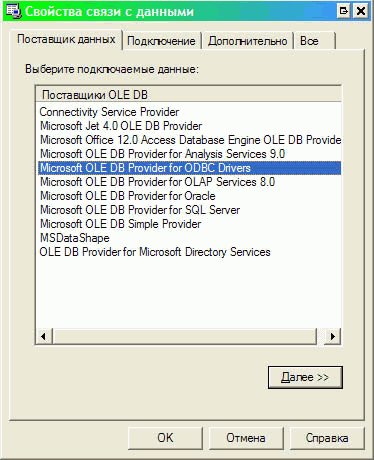
На Вкладке «Подключение» ставим флажок «Использовать строку подключения». Жмем «Сборка»
В появившемся окне «Выбор источника данных». Переходим на вкладку «Источник данных компьютера» и ДВАЖДЫ ЩЕЛКАЕМ на MS Access Database или База данных MS Access (Без разницы).
Примечание: использован компьютер с English Windows Server 2003 с установленным пакетом MUI RUS и русским MS Office 2007. На машинах с другими языками ОС и Office возможно, данные диалоговые окна будут выглядеть несколько по другому, главное – в «Выборе источника данных» выбрать БД MS ACCESS.
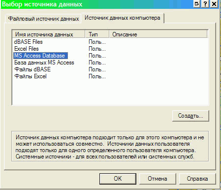
По двойному щелчку появится окно «Вход», здесь по кнопке «База данных» выбираем нужную нам БД и при необходимости вводим Логин-Пароль базы данных.

Жмем два раза «ОК», после чего в окне ««Свойства связи с данными» на вкладке «Подключение» жмем кнопку «Проверка связи с данными». Если все правильно, получим информационное окошко «Проверка подключения выполнена». Ошибка может возникнуть только в том случе, когда БД у вас запаролена и вы ошиблись с логином-паролем. Жмем ОК.
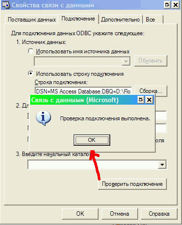
Мы вернулись к окошку Add Data. В нем появилось новое OLE DB Connection (если у вас их еще не было, то так и будет называться, в нашем случае оно был автоматически названо OLE DB Connection(5). Теперь самое время присвоить соединению вразумительное имя, что я и сделал.
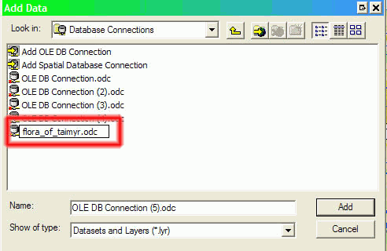
Дважды щелкаем по созданному соединению. Откроется окно с таблицами и запросами БД, расставленными по алфавиту. Выбираем нужный объект и жмем «Add». Кстати, если вы не обратили внимание на предупреждение о правильном синтаксисе имен источников данных, может появиться сообщение об ошибке Field Name Is Not valid и будет указано, имя какого поля ошибочно.
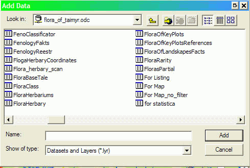
В левой нижней части окна ArсMAP переходим на вкладку Source. Теперь наряду с слоями карты мы видим и присоединенные таблицы.
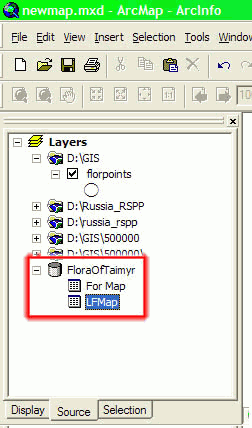
Теперь начинаем собственно присоединять атрибутивные данные к shape-файлам. Вызываем окно свойств нужного слоя, переходим на вкладку Joins & Relates. В левом окне Joins нажимаем Add...
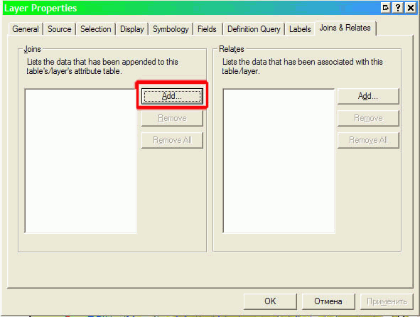
В появившемся окне в поле 1 выбираем поле связи (общее с присоединяемой таблицей) для слоя карты, в поле 2 – какую именно таблицу мы хотим присоединить, в поле 3 – поле связи для таблицы из БД. Внимание ! Проверяйте соответствие типов данных в поле связи в Shape-файле и таблице БД. Если, скажем, в БД поле будет числовым, а в атрибутике Shape-файла текстовым – установление связи будет невозможным ! В таком случае приведите поля в соответствие (путем изменения типа данных в таблице ACCESS или копирования данных в новое поле нужного типа. Кстати, если вы добавили в запрос (таблицу) новое поле, то в связанной таблице оно отобразится только после перезапуска ArcMAP или переустановки связи OLE DB Connection.
Можно также нажать кнопку Advanced и устонавить вариант связи «Один-Ко-Многим» (по умолчанию» или «Один-К-Одному» - примеры их нарисованы в окошке достаточно доходчиво. Жмем ОК.

Все, связь создана! Перейдите на вкладку Fieds в Layer Properites и убедитесь, что в атрибутике слоя появились новые поля (вверху – поля атрибутивной таблицы Shape-файла, внизу – присоединенные поля из запроса в БД
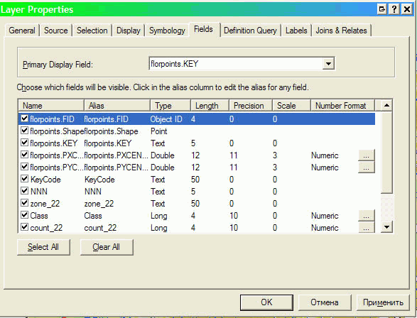
Также нужно открыть атрибутивную таблицу слоя, и убедиться, что связь осуществлена правильно. Выделены на рисунке поля связи shape-файла и связанного запроса БД.
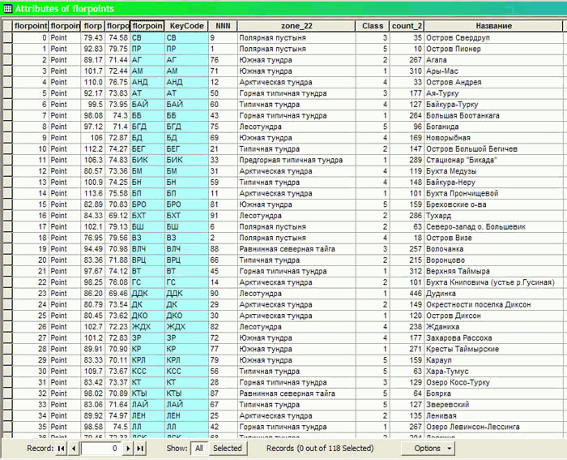
Теперь можно использовать присоединенную атрибутику для создания новых карт, например по полю count_22 построена картограмма (легенда типа богатства локальных флор Таймырского муниципального района (бывшего Таймырского АО).
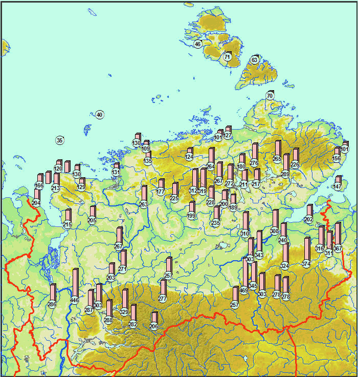
Еще один момент, на котором хотелось бы остановиться – связывание Shape-файла и внешней атрибутивной таблицы «Один-Ко-Многим». В моем случае это локальные флоры (117) и находки видов в этих локальных флорах (видов 866, всего находок более 23000). Можно произвести связь этих таблиц и напрямую, но в силу неких ограничений в связанной таблице ArcGIS выводит только первые 2000 записей. Поэтому созданные методом фильтрации (Definition Query) карты будут ошибочными, так как находки будут взяты только из этих первых 2000 записей (не исключаю, что исправить сие можно в системном реестре Windows, но прямых указаний не нашел).
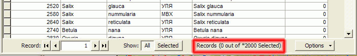
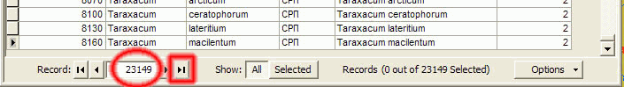
Есть достаточно простой выход – перед началом работы перейти к последней записи в связанной таблице, но мне представляется более удобным осуществлять фильтрацию в запросе непосредственно в ACCESS. Запрос при этом постоянно находится в режиме конструктора и просто сохраняется после каждой смены выборки, а в параллельно открытом проекте ArcMap после смены выборки проводится обновление компоновки по клавише f5.
Именно так генерируются карты, приведенные на сайте «Флора Таймыра».
Дата создания: 03.11.2008
Автор: Игорь Поспелов (taimyr)